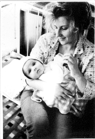
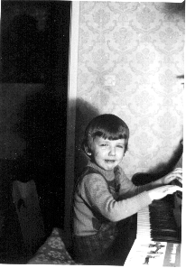

I am a student of computer science and mathematics at the MIM UW.

it's me with Mummy when I was a child
I take part in the activities of the Applied Logic Group and KNI (Computer Science Student Society).
I'm interested in logic, functional languages, topology, complexity theory, denotational semantics, abstract algebra,
category theory, domain theory, lambda calculus, foundations of mathematics, algebraic specifications, philosophy of science, theology, anthropology, music

when I have too much of something I get annoyed